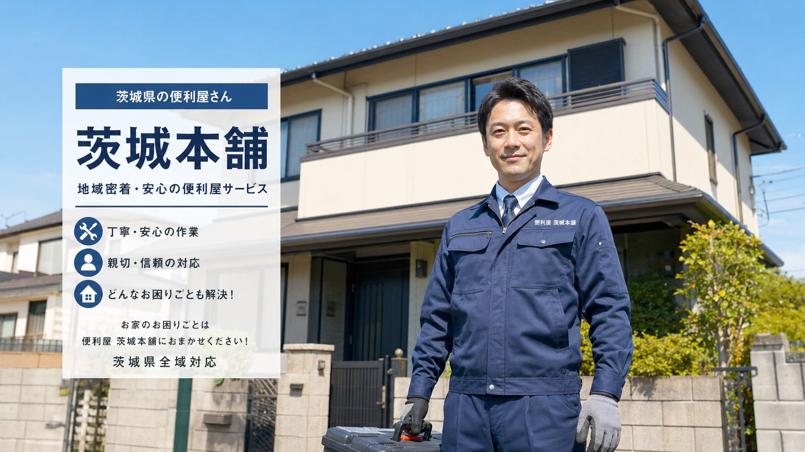
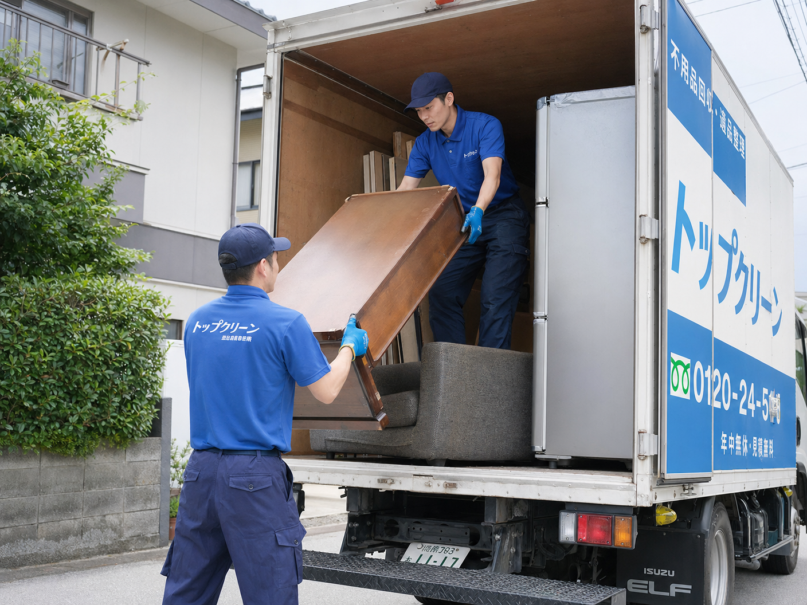
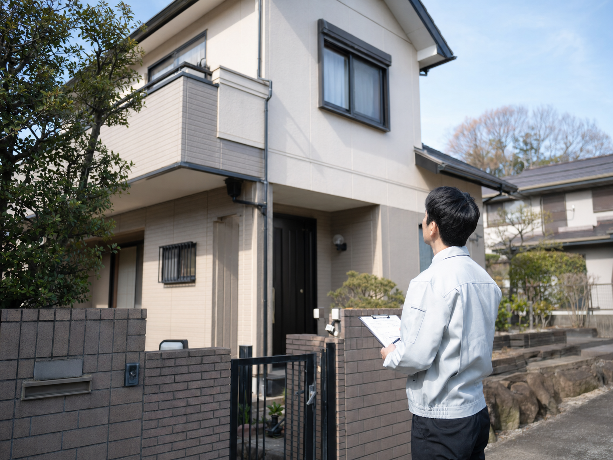
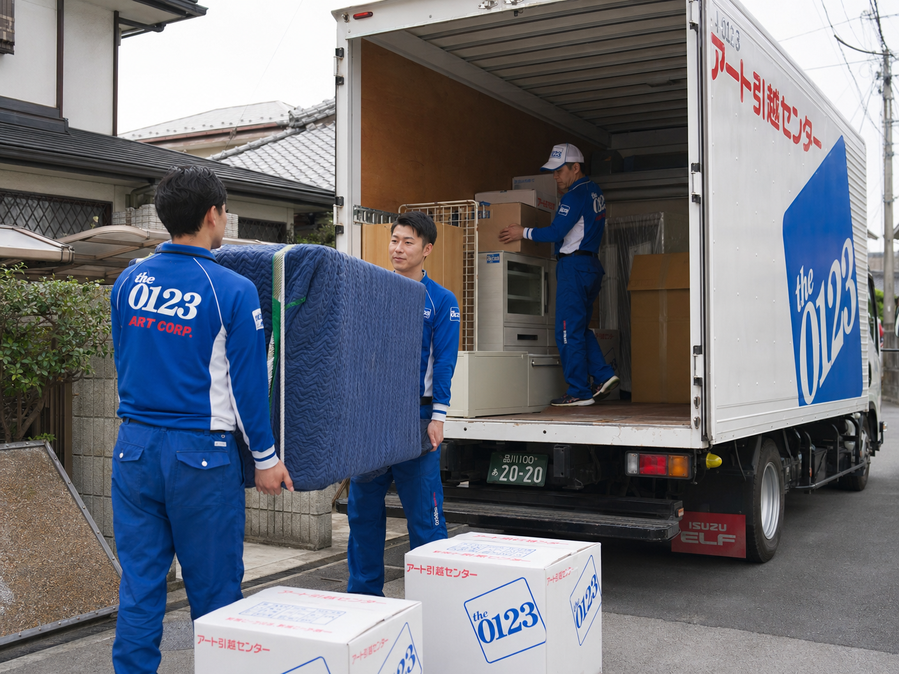
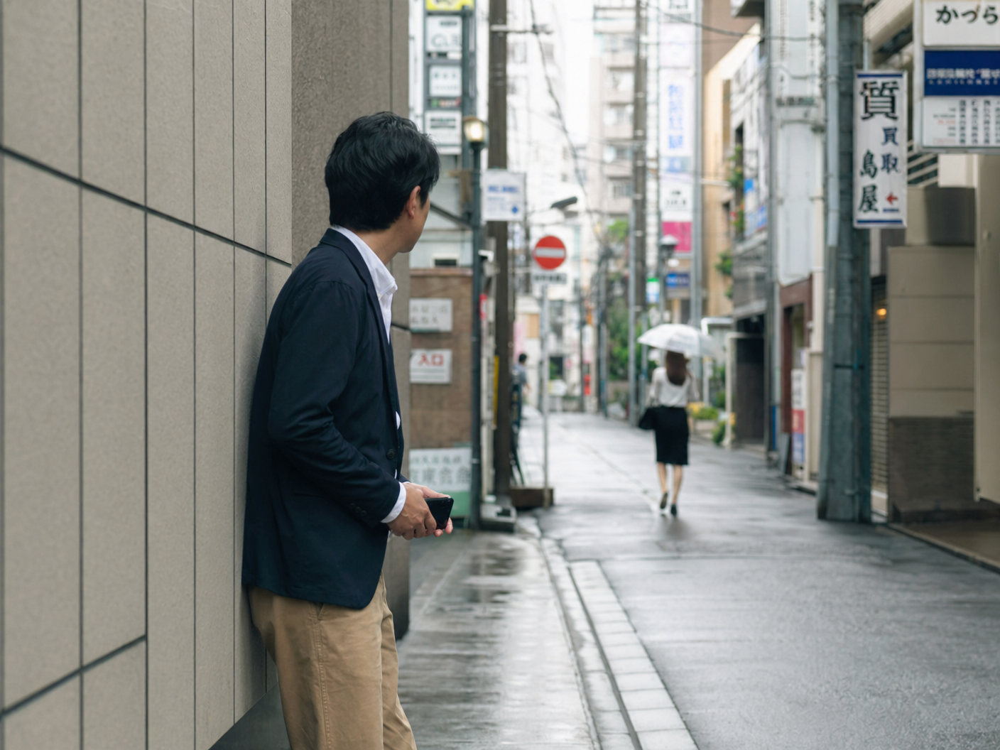
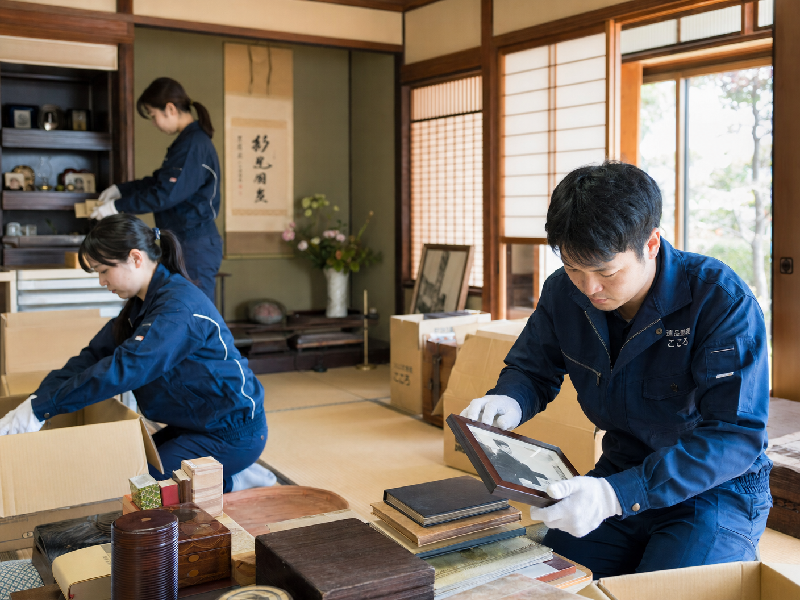

茨城県水戸市を拠点に、生活のあらゆるお困りごとを
丁寧・迅速・安心の料金でサポートします。
どんな小さなことも一つひとつ丁寧に。お客さまと末長い信頼関係を築きたいと考えております。
「小さな雑用」から「専門的なこと」まで幅広く対応。どんな些細なご依頼でも全力でお手伝いします。
料金表に記載の金額以外、追加料金は一切ありません。茨城県内であれば交通費も無料です。
地域に根ざした便利屋として、茨城県の皆さまの生活をサポートしています
生活支援代行サービスは、茨城県水戸市を拠点に、地域の皆さまの生活に寄り添ったサービスを提供しています。「信頼」「真心」「絆」を大切に、日々活動しています。
ホームページ記載内容以外のご要望にも可能な限り対応いたします。様々なトラブルのご相談も受付しており、法律的なアドバイスも専門家を通して回答いたします。
生活のあらゆるお困りごとに対応。お見積りは無料です
草刈り・庭木の剪定・農作業補助など。草木の集積・処分も対応します。

冷蔵庫・洗濯機・テレビ・家具など、あらゆる不用品を回収・買取します。
浴室・換気扇・キッチン・空き部屋丸ごとまで。プロの技術で徹底清掃します。

誰も住まなくなった空き家・空き地の管理・巡回。スポット〜年契約まで対応。

単身・軽引越しから大型引越しまで対応。軽トラ〜2tトラックまで各種プランあり。

追跡調査・ストーカー対策・盗聴器発見など。茨城県公安委員会許可の探偵業。

大切な故人の遺品を丁寧に選別・整理。ご供養も対応いたします。
話し相手・ペットの散歩・お買い物代行・お墓参り・冠婚葬祭代理出席など。
明確な料金体系で安心してご依頼いただけます。茨城県内は交通費無料。
| サービス内容 | 料金（消費税別） |
|---|---|
| 農作業補助（1時間） | 4,000円 |
| 荷物の梱包（1時間） | 3,000円 |
| 荷物の移動・引っ越し補助（1時間） | 4,500円 |
| 動画・写真撮影（1時間） | 8,500円 |
| 家具・ベットの組立（1時間） | 3,000円 |
| 病人看護の補助（1時間） | 3,000円 |
| ベビーシッター（1時間） | 3,000円 |
| 送迎・送り迎えサービス（当社より10km圏内） | 3,000円 |
| ペットの散歩（1時間） | 3,000円 |
| 話し相手サポート（1時間） | 3,000円 |
※その他のサービスはお電話にてお見積り致します。
| サービス内容 | 料金（消費税別） |
|---|---|
| 農作業等の補助（1時間） | 4,500円 |
| 草刈り／刈込みのみ（1坪200円・例えば、50坪の場合） | 10,000円 |
| 草刈り／集積有り（1坪200円・例えば、50坪の場合） | 12,000円 |
| 草刈り／収捨有り（1坪200円・例えば、50坪で軽トラック1台分の処分が発生した場合）※軽トラック10,000円・2tトラック30,000円がプラスされます。 | 22,000円 |
| 庭木の剪定／剪定のみ | 要見積り |
| 庭木の剪定／集積有り | 要見積り |
| 庭木の剪定／収捨有り ※収捨有りの場合、作業料金に処分料がプラスされます。伐採／幹の太さ、面積によりお見積りさせて頂きます。 | 要見積り |
※その他のサービスはお電話にてご確認ください。
| プラン | 料金（消費税別） |
|---|---|
| 軽トラック（平積み）積み放題／Aプラン | 16,000円 |
| 軽トラック（かさ上げ『2倍』）積み放題／Bプラン | 30,000円 |
| 2tトラック（平積み）積み放題／Cプラン | 35,000円 |
| 2tトラック（かさ上げ『2倍』）積み放題／Dプラン | 68,000円 |
| 品目 | 料金（消費税別） |
|---|---|
| 冷蔵庫（本体のみの場合） | 9,000円 |
| 洗濯機 | 5,000円 |
| テレビ | 5,000円 |
| 電話機・FAX機 | 500円 |
| 電子レンジ | 2,000円 |
| 学習机 | 3,500円 |
| こたつ | 1,000円 |
| ソファー（2人掛け） | 3,000円 |
| スプリングベッド（S〜W） | 4,000円 |
| スプリングベッド（W以上） | 6,000円 |
| カーペット（四畳半） | 1,500円 |
| タンス（中） | 3,500円 |
| タンス（大） | 5,500円 |
| 自転車（1台） | 1,000円 |
| 各自動車／トラック | 別途（状態により買取可） |
注）回収物が多い場合や各種の不用品の回収が含まれる場合には作業料金（1時間）3,000円がプラスされます。また、アスベスト（石綿）を含む不要品の回収は行っておりません。
※その他、廃自動車、バイク等の回収、陶器やプラスチック類の回収で量が少ない場合等は別途お見積り致します。
例）弊社（水戸市）近隣半径10km圏内で陶器やふとん、廃プラスチック等が混じった不用品を軽トラック半分程度回収する場合：3,000円（1時間）＋5〜7,000円＝8〜10,000円
| サービス内容 | 料金（消費税別） |
|---|---|
| 浴室クリーニング（面積により料金変動） | 8,000円〜13,000円 |
| 換気扇クリーニング | 8,000円 |
| 洗面所クリーニング（面積により料金変動） | 5,000円〜10,000円 |
| キッチンクリーニング（面積により料金変動） | 18,000円〜23,000円 |
| 間取り | 料金（消費税別） |
|---|---|
| 1K・1DK | 18,000円 |
| 1LDK・2DK | 25,000円 |
| 2LDK・3DK | 35,000円 |
| 3LDK・4DK | 43,000円 |
| 4LDK・5DK | 51,000円 |
※その他のサービス料金は電話にてご相談ください。
| サービス内容 | 料金（消費税別） |
|---|---|
| 一戸建て（月一回巡回）／外回り・年契約 | 8,000円 |
| マンション（月一回巡回）／外回り・年契約 | 6,000円 |
| 一戸建て（月一回巡回）／内・外回り・年契約 | 10,000円 |
| マンション（月一回巡回）／内・外回り・年契約 | 8,000円 |
| 一戸建て（スポット契約／1回） | 10,000円 |
| マンション（スポット契約／1回） | 8,000円 |
| 農地（300坪以下／年契約）草刈り・清掃有り | 20,000円 |
| 宅地（100坪以下／年契約）草刈り・清掃有り | 9,000円 |
※契約及び管理内容はご相談の際にご説明させていただきます。
| サービス内容 | 料金（消費税別） |
|---|---|
| 単身者等軽引越し／軽トラック・バン | 荷物の量や距離により料金が変動する為、別途お見積り致します。 |
| キャリアカー（業者価格）手配の代行 | 別途 |
| 中古車オークション代行 | 別途 |
| （軽・普通）車検代行 | 10,000円 |
| プラン内容 | 料金（消費税別） |
|---|---|
| 調査員1名（車両追跡なし）／（1時間） | 5,000円 |
| 安心プランA（調査員2名・車両費込み）／（6時間） | 55,000円 |
| 安心プランB（調査員2名・車両費込み）／（1日） | 100,000円 |
| 安心プランC（調査員3名・車両費込み）／（6時間） | 80,000円 |
| 安心プランD（調査員3名・車両費込み）／（1日） | 150,000円 |
| 人探し・所在調査（情報内容によりお受け出来ない場合がございます。）／（1日） | 90,000円〜110,000円 |
| 盗聴器発見／（一部屋〜家全体） | 35,000円〜80,000円 |
| いたずら・嫌がらせ調査／（1日） | 110,000円 |
| ストーカー対策／（1日） | 110,000円 |
| その他調査（内容に応じてお見積りいたします。） | 別途 |
※弊社では専任スタッフがチームを組み、事前にお客様とご依頼内容を打ち合わせ、綿密に計画し、実行いたします。また、最近「きちんとした調査をしない・説明のないオプション料金を請求された・成功報酬を取られた」等、私達から見て驚くような報告が届いております。弊社におきましては、成功報酬、無理のある調査、追加料金の発生は一切ございません。
| サービス内容 | 料金（消費税別） |
|---|---|
| 予約代行（1時間） | 3,000円 |
| 家事代行 | 3,000円 |
| お買い物代行 | 3,000円 |
| 留守番代行（1時間） | 3,000円 |
| 場所取り代行（1時間） | 3,000円 |
| お墓参り代行（軽い墓地清掃・お線香・仏花を含む） | 6,000円 |
| 冠婚葬祭代理出席 | 5,000円 |
※上記以外にも各種代理・代行サービスをご用意しておりますので、詳しくは電話かメールにてお気軽にご相談ください。
注）料金表は弊社業務内容の一部です。料金表に記されていないご用件もお気軽にご相談ください。（料金表は水戸市内近郊にお住まいの方で交通費が発生しない場合の料金になります。）
| サービス内容 | 料金（消費税別） |
|---|---|
| 生前整理 | 別途要見積り（整理及び処分する物品の量により決まります。） |
| 遺品整理 | 別途要見積り（整理及び処分する物品の量により決まります。） |
※お見積りは無料です。お気軽にご連絡ください。
| 地域 | 出張料金 |
|---|---|
| 水戸市、ひたちなか市（旧勝田）、茨城町、大洗町、那珂市（中心部）、笠間市（旧友部）、城里町（旧常北） | かかりません |
| 外の地域、大子町（中心部）、桜川市（上記以外の地域）、筑西市（旧下館）、石岡市（上記以外の地域）、かすみがうら市、つくば市（中心部）、土浦市（中心部）、2方市（旧廃生）、鹿嶋市（中心部） | かかりません |
| それ以外の県内地域にお住まいの方 | かかりません |
◇主なサービス料金の一覧表となります。なお、料金表の価格は消費税抜きの金額となっておりますので、予めご了承ください。
※料金内容について不安な点がございましたら、「他社さま」との料金を比較・検討されたうえでご相談ください。
料金表は水戸市内近郊にお住まいの方で交通費が発生しない場合の料金です。茨城県内であれば交通費は一切いただきません。ご不明な点はお気軽にお電話ください。
茨城県内は交通費無料。隣県もサポートいたします
茨城県内全域は交通費を一切いただきません。
茨城県外（栃木県・千葉県・福島県等の隣県）もサポートいたします。詳しくはお電話にてご相談ください。
多くのお客様にご満足いただいております
「草刈りをお願いしました。広い庭でしたが、丁寧に作業していただき、とてもきれいになりました。料金も明確で安心でした。」
「実家の遺品整理をお願いしました。大変な作業でしたが、スタッフの方が丁寧に対応してくださり、本当に助かりました。」
「不用品の回収をお願いしました。大型家電も含めてすべて回収していただき、部屋がすっきりしました。対応も迅速で大満足です。」
「空き家の管理をお任せしています。月に一度巡回して報告書を送ってくれるので、遠方に住んでいても安心です。」
お見積り・ご相談は無料です。お気軽にご連絡ください
メールは24時間受付しております
送信後、japan.yorozu.sien@gmail.com よりご返信いたします。